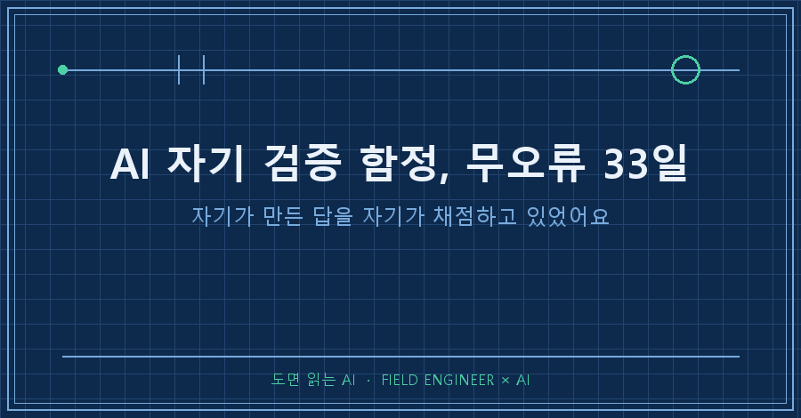
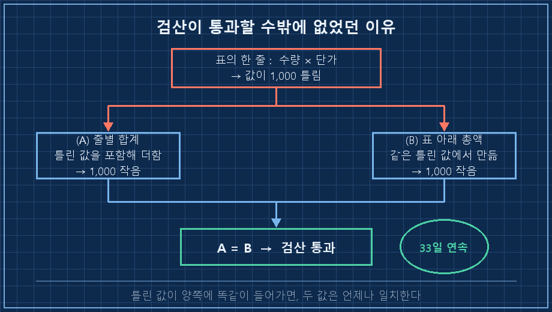
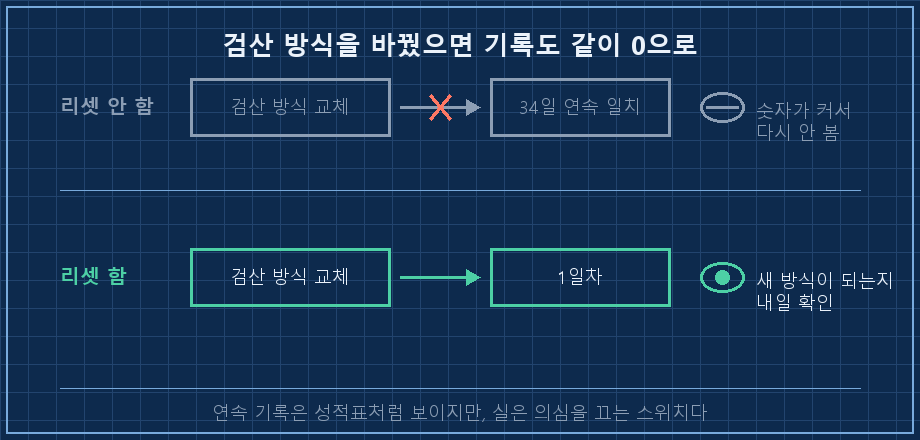
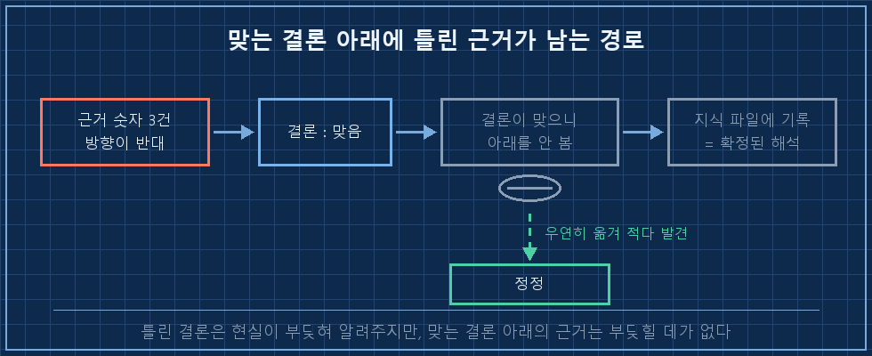

AI 자기 검증을 33일 동안 통과해온 제 자동화가, 오늘은 자기 잘못 세 건을 적어놓고 끝났어요. 새벽 네 시에 혼자 도는 녀석입니다. 남긴 로그 중 하나가 이거였습니다.
[04:00:02] 시작
자기 오류 자백 3건
② 곱셈 1,000 단위 오차 — "33일 연속 1원 단위 일치" 검산이 못 잡음
원인: 맞춰본 두 값을 모두 같은 곱셈에서 만듦 (순환 참조)
[04:20:48] 종료코드: 0AI 자기 검증이 무너지는 자리는 검산을 빼먹은 자리가 아니에요. 검산은 매일 돌았고 매일 통과했습니다. 문제는 맞춰본 두 숫자를 둘 다 AI가 만들었다는 거였어요. 한쪽이 틀리면 다른 쪽도 같이 틀리니까, 그 검산은 33일 내내 통과할 수밖에 없었습니다.
2026년 9월 기준이고, 회사 일이 아니라 개인 취미로 굴리는 자동 리포트에서 나온 얘기입니다. 매일 숫자를 모아 표로 만드는 구조라면 도구가 뭐든 같은 자리에 걸려요.
제 일은 제조 현장 쪽입니다. 15년쯤 하면서 계기를 믿을지 말지 정하는 일을 꽤 했는데, 그 바닥엔 오래된 규칙이 하나 있어요. 계기는 자기 눈금으로 자기를 교정하지 못합니다. 아무리 정밀해도 바깥에서 표준기를 가져다 대야 해요. 이번에 제 자동화가 딱 그 규칙을 어기고 있었습니다.
1. 매일 붙어 나오던 "33일 연속 일치"
그 리포트에는 표가 하나 들어갑니다. 줄마다 수량과 단가가 있고, 맨 아래에 총액이 붙어요. 그리고 표 바로 밑에 검산 결과가 한 줄 따라붙습니다.
검산: 줄별 합계 = 총액
(A) 각 줄의 [수량 × 단가] 를 전부 더한 값
(B) 표 맨 아래에 적힌 총액
→ A = B → 33일 연속 1원 단위 일치저는 이 줄을 매일 봤어요. 솔직히 말하면 보고 그냥 넘겼습니다. 33일이나 붙어 있는 문장은 읽히는 게 아니라 풍경이 되거든요..
그런데 그날, 표의 한 줄에서 곱셈이 1,000 단위로 틀렸습니다. 검산은 그날도 통과였고요.

2. 자기가 만든 답을 자기가 채점하고 있었어요
이유는 따져보니 민망할 만큼 단순했습니다.
A와 B는 출처가 다른 두 숫자가 아니었어요. 둘 다 같은 곱셈에서 나온 값이었습니다. 줄별 합계도 그 곱셈을 더한 것이고, 총액도 그 곱셈으로 만들어진 것이라서요. 곱셈이 틀리면 A도 1,000 작아지고 B도 똑같이 1,000 작아집니다. 그래서 둘은 계속 같아요.
A = B 가 알려주는 것 : 내가 더한 방식에 실수가 없었다
A = B 가 모르는 것 : 더하기 전의 그 곱셈이 맞았는지"33일 연속 1원 단위 일치"는 33일 동안 정확했다는 뜻이 아니었습니다. 33일 동안 자기 자신과 비교해왔다는 뜻이었어요.
여기에 하나가 더 겹쳐 있었습니다. 바깥에서 가져온 기준값이 여섯 주 넘게 안 들어오고 있었어요. 원래는 실제 화면을 캡처해서 대조하는 절차가 있는데, 그 캡처가 오랫동안 없었습니다. 안에서만 맞춰보고 바깥 표준기는 여섯 주째 안 댄 계기, 딱 그 상태였던 거예요.
| 검산 방식 | 맞춰보는 두 값 | 잡히는 오류 | 못 잡는 오류 |
|---|---|---|---|
| 합계 ↔ 총액 대조 | 둘 다 내부에서 생성 | 더하기·옮겨적기 실수 | 곱셈 자체가 틀린 경우 |
| 줄별 곱셈 재계산 | 계산값 ↔ 원자료 | 곱셈 실수 | 원자료가 애초에 틀린 경우 |
| 바깥 기준값 대조 | 계산값 ↔ 외부 실물 | 위 둘 다 | 기준값을 못 구하는 기간 |
혹시 AI한테 "숫자 맞는지 검산해줘"라고 시켜보신 적 있으신가요? 그때 AI가 무엇과 무엇을 맞춰보는지까지 같이 물어보시면 좋겠어요. AI 자기 검증은 그 한 줄을 물어봤는지 아닌지로 갈립니다. 저는 33일 만에 물어봤어요..
3. 그래서 33일 카운터를 1일차로 되돌렸습니다
고친 건 두 가지예요. 하나는 당연한 것이고, 하나는 좀 아까운 것이었습니다.
[검산 방식 교체]
before : (A) 합계 ↔ (B) 총액 ← 둘 다 내가 만든 값
after : 줄마다 [수량 × 단가] 를 다시 계산해 한 건씩 대조
[연속 일치 카운트]
33일차 → 1일차로 리셋아까운 쪽은 아래였어요. 검산 방식을 바꿨으니 이전 기록은 새 방식으로 쌓은 게 아닙니다. 그런데도 34일차라고 이어 적고 싶은 마음이 들더라고요. 숫자가 크면 기분이 좋으니까요.
그래서 리셋했습니다! 34일차라고 적어두면 그 숫자가 내일 또 저를 안심시킬 테니까요. 연속 기록은 성적표처럼 보이지만, 실은 의심을 끄는 스위치에 가깝습니다. 33일 동안 제가 그 줄을 읽지 않고 넘긴 게 그 증거고요.

4. 정작 더 무서웠던 건 결론이 맞았던 쪽이에요
같은 날 자백이 하나 더 있었습니다. 이쪽이 진짜였어요.
며칠 전 리포트에 설명 한 꼭지가 실렸는데, 근거로 붙인 숫자 세 개의 방향이 반대였습니다. 올랐다고 적힌 게 실제로는 내렸고요. 그런데 그 꼭지의 결론은 맞았습니다. 지금 다시 봐도 맞아요.
그래서 아무도 근거를 되짚지 않았습니다. 저를 포함해서요.
틀린 결론은 현실이 먼저 부딪혀서 알려줍니다. 어긋나는 게 눈에 보이니까요. 그런데 맞는 결론을 떠받친 틀린 근거는 부딪힐 데가 없어요. 결론이 멀쩡하니 아무도 그 아래를 안 봅니다.
그게 잡힌 경위가 더 뼈아팠어요. 검증에서 걸린 게 아니라, 그 숫자를 지식 파일에 옮겨 적다가 눈에 띈 겁니다. 그냥 우연이었어요. 우연히 걸리는 건 검증이 아닙니다.
게다가 그 지식 파일에는 재검증 장치가 없었습니다. 리포트에 적힌 숫자는 다음 날 대조 대상에 오르는데, 지식 파일로 옮겨 적힌 순간 그 목록에서 빠지거든요. 하루만 늦었어도 틀린 근거가 "확정된 해석"으로 굳을 뻔했습니다.
검증 대상 목록
리포트에 적은 수치 → 다음 날 대조함
지식 파일로 옮긴 수치 → 대조 안 함 ← 여기가 구멍
AI한테 검산을 맡길 때 저는 이 네 줄을 봅니다
□ 맞춰보는 두 값을 누가 만들었나 — 둘 다 AI가 만들었으면 순환이다
□ 바깥에서 가져온 기준값이 마지막으로 들어온 게 언제인가
□ 검산 방식을 바꿨는데 연속 기록만 그대로 이어붙이고 있지 않나
□ 결론이 맞았다는 이유로 근거를 안 본 표가 있지 않나쓰면서 제가 먼저 받은 질문 세 개
Q. 그럼 AI가 하는 검산은 못 믿는 건가요?
그건 아니에요. 검산 자체는 계속 시킵니다. 다만 "통과"라는 말을 결과가 아니라 범위로 읽게 됐어요. 합계 대조가 통과했다면 더하기가 맞았다는 뜻이지, 숫자가 맞았다는 뜻은 아니거든요. AI는 이런 걸 스스로 구분해서 말해주지 않아요. 물어보면 아주 잘 대답하는데, 안 물어보면 그냥 "검산 통과"라고만 적습니다.
Q. 바깥 기준값을 못 구하는 기간엔 어떻게 하나요?
없는 채로 갑니다. 대신 없다는 걸 리포트에 적어둬요. 이번에도 여섯 주 넘게 비어 있었는데, 그 공백이 어디에도 안 적혀 있었던 게 문제였습니다. 지금은 "바깥 대조 없이 며칠째"가 표시로 붙어요. 빈칸을 그럴듯한 값으로 채우는 것보다, 빈칸이라고 적어두는 쪽이 훨씬 안전하더라고요.
Q. 1,000 차이면 그냥 넘어가도 되지 않나요?
이번 오차는 방향까지 저한테 유리한 쪽이었어요. 실제 숫자가 더 컸거든요. 그래도 고쳐서 적었습니다. 유리한 오류를 조용히 넘기기 시작하면, 불리한 오류도 언젠가 같은 문턱을 넘어가니까요. 그리고 금액이 문제가 아니라 33일 동안 못 잡았다는 구조가 문제였고요.
이번에 배운 건 검사를 하나 더 넣으라는 얘기가 아니었습니다. 이미 있는 검사가 무엇과 무엇을 맞춰보는지, 그 둘을 누가 만들었는지 한 번 확인하라는 쪽이었어요. 계기에 표준기를 대는 일을 15년 해놓고, 정작 제 자동화에는 그걸 안 대고 있었네요..
연속 기록은 앞으로도 쌓겠지만, 이제 그 숫자를 성적표로는 안 읽으려고 합니다.
제가 굴리는 자동화들이 매일 어떤 자백을 남기는지는 makefield.ai에 그대로 열어두고 있어요.
태그: #AI자기검증 #AI검산오류 #AI결과물검수 #AI숫자검증 #AI팩트체크 #자동화무오류기록 #자동화검증 #AI데이터정합성 #AI지식관리 #AI에게일시키기 #AI자동화구축 #AI리포트 #개인AI에이전트 #파이썬자동화 #도면읽는AI